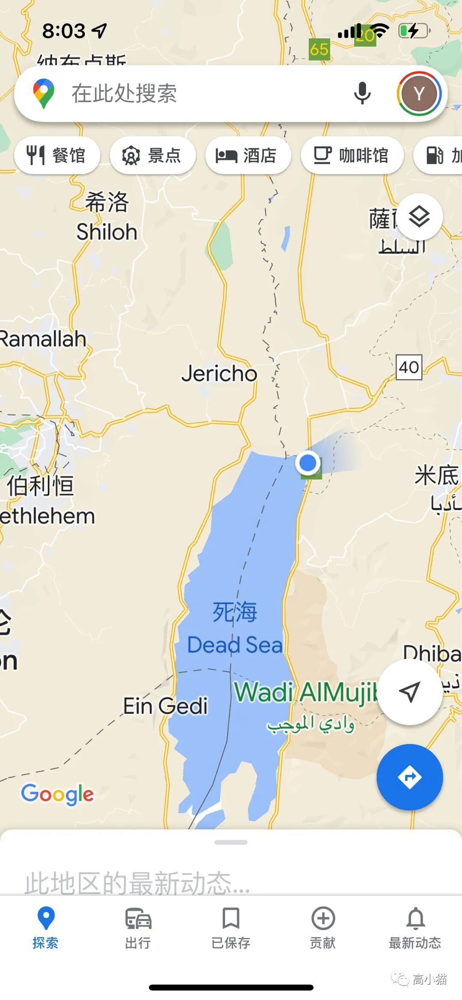
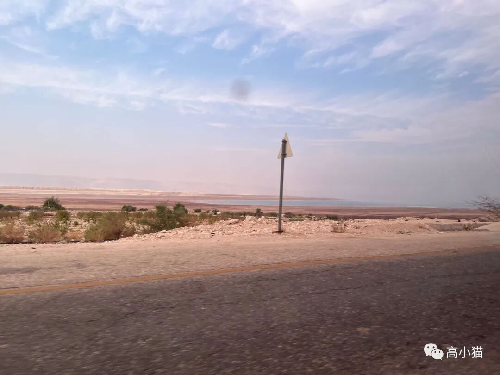
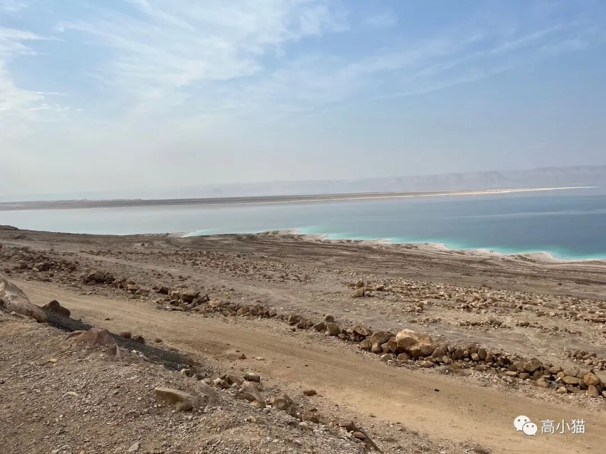
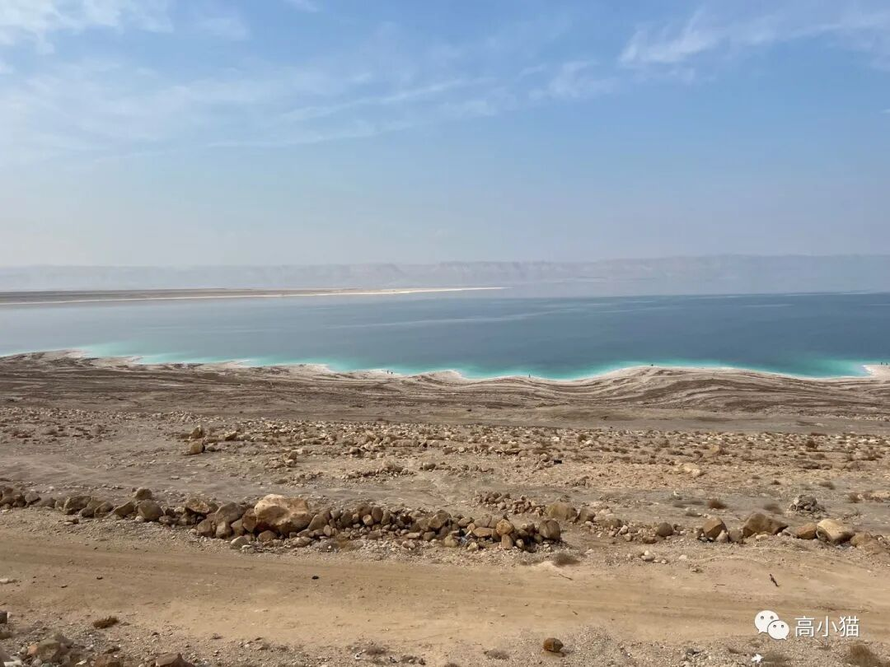
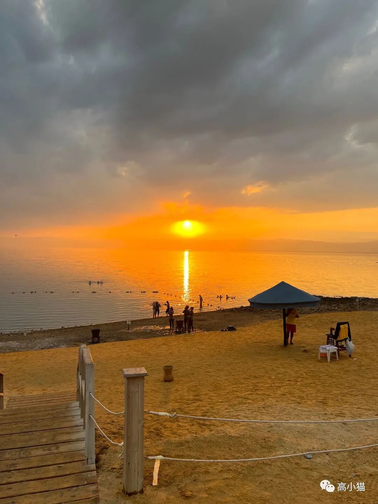
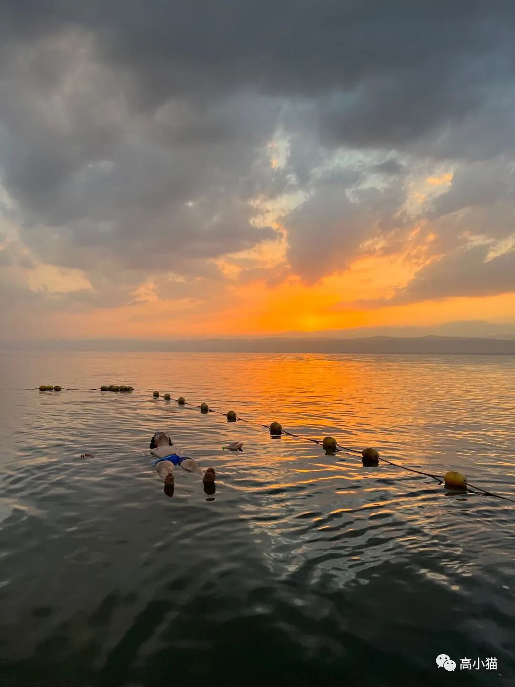

死海
死海位于约旦和以色列的边境线之上。这两个国家基本上把死海一边一半，对半分了。
死海的水来自于约旦河，就是那个以前新闻里老是提到的巴以冲突时候提到的“约旦河西岸”的那个约旦河。约旦河西岸实际上就是指的巴勒斯坦和以色列冲突的这一整块区域，由于国境线不清晰，所以就用约旦河西岸来指代了。
死海的位置，我所在的蓝点位于约旦这一侧
死海初见
很大一片死海
很大我们这一天是从红海的亚克巴一路向北，开到了死海的右上角，位于约旦这一侧的死海度假酒店。
死海这边基本上都是以酒店作为活动单位的。除了酒店的餐厅，外面是没有餐厅的。要玩死海也是只能去酒店自己的沙滩，因为公共的沙滩非常脏。所以要来玩的话还是要定一个稍微好一点的酒店。
另外约旦这边因为他们用的是以鸡粪便为主的有机肥料，可能是处理的不够好，因此滋生了大量的苍蝇，死海这边苍蝇非常多。所以如果酒店不够好的话，可能苍蝇会让人很难受。

宾馆的死海沙滩，其实很干净
可以完全浮起来大约太阳快落山的时候，我去了宾馆旁边的死海沙滩。落日挺漂亮的，不过更好玩的是死海的水。
我从小就听说过死海的故事。故事里说死海里面因为有大量的盐，所以人可以漂浮在水上，不会沉下去。然后配的图是一张躺在死海里看报纸的人的照片。
我由此就有了一些想象。一是我觉得死海应该周围都是白花花的，到处都是盐。二是我觉得既然人沉不下去，在里面游泳肯定很开心。
结果发现并不是如此。死海的海滩和别的海滩在外观上没有任何的区别（可能是我去的那个宾馆是这样，别的我也没看过，而且听说这个宾馆不算是当地特别好的。）而且死海里面虽然浮起来了，但是挺难游泳的，尤其是正常姿势游泳的时候，后面的脚整个都浮出水面了，没法蹬水了。
不过躺在水里彻底放松还是很开心的，真的是一点不用滑就可以浮起来的那种，会感觉下面的水有魔力一般，有一种向上的强大的浮力，特别难向下沉。不过要是把头发沾湿了，水就很容易弄到眼睛里，那就彻底完蛋，眼睛会完全睁不开。
死海的水不是咸，也都不是齁咸，而是那种爆炸的，很难形容的刺激的苦味。不慎弄到眼睛里，眼睛就睁不开了，弄到嘴巴里，嘴巴里就是一嘴的苦味。而且死海的水会摸起来会让人觉得油油地。据说不能在这样的水里呆超过20分钟，不然会对身体有危害，所以我泡了一下拍了照就出来了。
伊斯兰国家
今年至今为止我已经去过了三个伊斯兰国家了，分别是土耳其，埃及和约旦。他们的世俗化程度上来说，土耳其，埃及，约旦依次递减。
土耳其最开放，成年女子很多都不用戴头巾。喝酒也没有很多禁忌，很多地方都有卖酒的场所。
埃及相对来说会保守一点，成年女子基本上都会戴头巾，有酒的地方还可以，因为这个国家有15%是信基督教的。埃及的南部，比如卢克索及以南的阿斯旺会比北面的城市，比如开罗，亚历山大要保守很多，女子都会穿深色，主要是黑色长袍。
约旦最为保守，不过我感觉也没有跟埃及差很多。不过大街上看到的女性数量要比在埃及看到的女性数量少不少。
比约旦更保守的据说有沙特阿拉伯，以及伊朗。
沙特阿拉伯据说是一个国家法律都会执行伊斯兰教里古兰经的律法的国家，所以更加保守。
伊朗则是什叶派的大本营。我们在新闻里经常看到的逊尼派和什叶派，他们的区别主要在教义的理解上，以至于互相之间不承认对方。我感觉他们的区别还是很大的，有点类似于基督教和天主教之间那么大的区别了。上面提到的那些伊斯兰国家似乎都是逊尼派这个教派的，只有伊朗是什叶派的。
什叶派比较著名的是他们在有的宗教节日会自残，就是用一些链条什么的抽打自己之类的。据说这是为了体验他们的先知当年被破坏时受到的痛苦。
伊斯兰教义
我们在约旦的导游是一个相当虔诚的伊斯兰信徒。他跟我们普及了很多伊斯兰教的习俗。
我们在国内想到伊斯兰教，其实第一反应就是不吃猪肉。他说这个只是很肤浅的理解。其实在伊斯兰的教义里面，吃猪肉虽然也是罪，但是是小罪。更大的罪过其实是不礼拜。
说到礼拜，是指的伊斯兰教徒每天五次的礼拜。分别要在5点天亮，12点左右，下午某个时间，傍晚以及晚上做一共五次礼拜，天天如此。
我在约旦和埃及的时候，经常看到有人就在街边，拿了一条毛毯就铺在地上，就开始做礼拜。每次时间长度也就3分钟左右，基本上是站着拜几下，然后跪着磕头拜几下，再站起来拜几下，再磕头就差不多了。我是觉得他们真的很自觉，而且每天都要做五次，真的是要花很多的精力。
还有一个禁忌是不能喝酒，所以他们除了外国人的旅游场所，别的地方都没有酒精供应。据说今年的卡塔尔也是一个伊斯兰国家，是第一次没有酒精供应的世界杯。
然后伊斯兰教规定一个男的最多可以有四个老婆，但是他们必须对所有的老婆都公平一致，不能对老婆之间分尊卑，给她们的待遇也要一致，比如给其中一个买了一套房，就要给另一个也买一套。
还有他们之所以规定女性要穿长袍，戴头巾，出发点是觉得女性不能在外面诱惑别的男性，所以要用衣物遮盖住自己的身材（长袍），自己的外貌（头巾）。
我个人是一个不信教的人，所以我会觉得没有必要用宗教来给自己一些束缚。不过了解这些还是挺开眼界的。
完